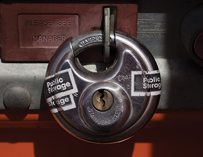
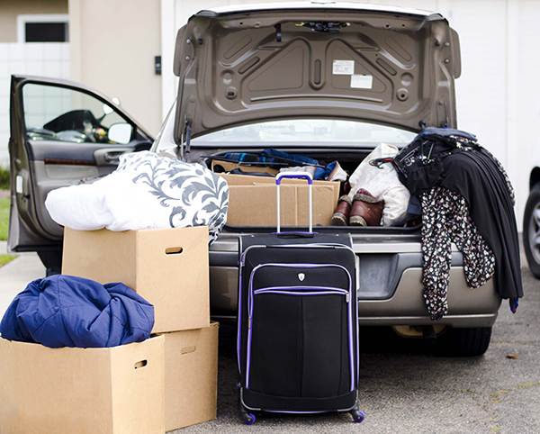
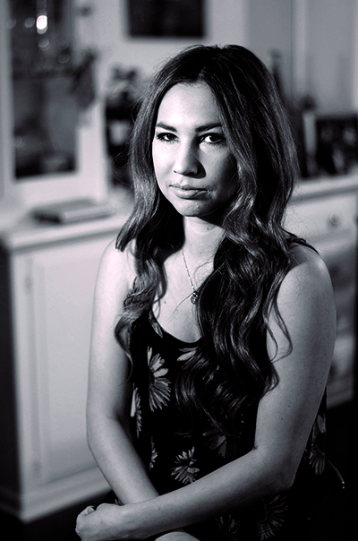
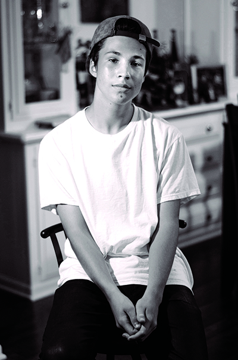
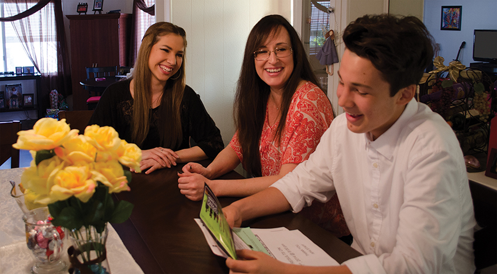

“I’ll drop you off last on the way home,” my friend, Shae, said as she picked me up for the movies.
She knew I didn’t want her boyfriend and his friends to know where I lived — in a simple Huntington Beach motel located a couple blocks away from my old house.
One month ago, I had lived in a comfortable two-bedroom, two-story townhome with my brother and mom. We lived there for five years and originally my dad lived with us, too. He moved out a year ago because his alcoholism tore him and my mom apart. Upon moving out, he worked on living sober and helped my mom with half our monthly rent. When it became evident that he would not be allowed back in the house, my dad stopped contributing his half. My mom struggled to pay the $1500 rent alone. Too young to help her, I watched her stress.
April was an especially hard month. My sixteenth birthday was in April and my brother’s birthday as well. Despite the circumstances, my mom and dad took my friends Beth and Daniel, my brother and me to dinner at Macaroni Grill. My mom gave me a ring with a small heart-shaped diamond and told me that she wanted my first diamond ring to be from her. For my brother’s birthday we invited the neighborhood kids over for cake and ice cream, ate pizza and played Rock Band.
The landlord and my mom had an agreement that month that she could give him the rent a week late. Then we found an eviction notice on our front door. My mom spoke with the landlord, and even took him to court, but her efforts were to no avail. We had to move.
Move? I loved our house. My friends lived nearby. My 8-year-old brother, Jo-Joe, and I spent so much time with some of our neighbors that I considered them family. I pretended it wasn’t happening. I even ignored my mother’s requests to start packing.
But little by little boxes filled the house and a month later, the day came. We loaded our belongings into the back of a U-Haul truck and drove to the storage facility my mom rented. My mom and dad piled the contents of the truck — the contents of our whole lives — into storage. By the time they finished the room was so full we could hardly pull down the metal gate to close the unit. The rest of our things, a minimal amount of clothes, pots, pans and school supplies, were piled high in my mom’s car.
Exhausted after our long day, we drove to a motel that would be our home for the next two weeks. Stale air filled the motel room, but as we turned the light on I realized that the room was not all that bad. We still had a roof over our heads and we had each other. I took a tour of the room that lasted all of one minute: one bed, a TV, a kitchen area with a stove, sink and table, and a bathroom. It was about the size of our old living room and dining room combined, but it was comfortable and it was a place to stay.
As a sophomore in high school, I didn’t want people to know where I was living. It would be embarrassing if anyone found out, so I only told my closest friends. My brother and I walked quickly to the motel after school, hoping that no one would see us. Good friends of mine, like Shae, reassured me it wasn’t a big deal and that everyone went through hard times.
From then on simple things made us happy. Two for one dollar Jack In the Box tacos and a large drink after school, sitting on the bed together and watching "American Idol" while eating dinner, doing my homework at the kitchen table. Everything was the same, yet so different.
Just before the move my boyfriend of one year and I broke up. That was hard. Then after the move, my best friend, Beth, and I had an argument and stopped being friends. That was harder. Beth and I had been friends since seventh grade. When we first moved to the motel, my mom would drop me off at her house every morning so that we could walk to school together like always. This routine disappeared, as well.
I began to accept that change was an inevitable part of life and held on even tighter to the only constant in my life — my family. The next eight months were filled with moves. We loaded all our stuff into the car and drove to my Uncle Christian’s one-bedroom condo in Newport. While my uncle, who had lived with us for many years before our move, welcomed us into his home, his girlfriend did not. Upon our arrival, she interrogated him on why he was letting us move in.
Hearing their conversation, my mom told them to forget it, we would go somewhere else. We piled into the car and drove down random streets in Huntington Beach, looking for a motel. We finally settled for the one we were at before.
In June, we moved in with our old neighbors. We could no longer afford the motel and wanted to stay close to the schools.
I could see my old house from the window of their room. I gazed at the lone house that I so often took for granted during my time there. New people began moving in; I couldn’t stand to look at them. How dare they take what was meant to be mine?
During the last two weeks of school, in the middle of finals, we moved to my cousin’s house in La Puente. The drive to school took over an hour. My mom’s drive to work, at London Coin Galleries in the Mission Viejo Mall, took an additional forty-five minutes.
  We stayed at my cousin’s for what felt like the longest summer of my life because I was away from my friends. My mom, brother and I shared my younger cousin’s room and slept on a bunk bed. During the day, my 31-year-old cousin and I would talk about life and he became the father figure I was missing. Finding a new place was difficult.
When we had a place to live, it seemed like we saw “for rent” signs on every corner. But when we needed one most, there w ere none. Money was an issue and my mom was desperately trying to save. My mom’s credit, ripped to shreds from the eviction notice, made it difficult to land a home.
Luckily, my mom’s boss owned properties in Newport Beach and he allowed us to live in two of his houses at a reduced cost until he found other renters. During these moves we didn’t bother to completely unpack because we knew the moves weren’t permanent.
We spent Halloween in a two-bedroom house that was walking distance from the beach. Two parallel arched doorways gave a view into the unfurnished kitchen, dining room and living room. The single piece of furniture that we brought into the house was a flattened queen mattress that seemed unworthy of the gleaming wood floors that it rested upon.
Thanksgiving and Christmas were spent in a two-bedroom, two-bathroom apartment near Corona Del Mar High School. From the outside it wasn’t much, but the inside was newly renovated. Wooden walls combined with cold winter nights made the apartment feel like a cabin in the mountains. Although we were on the second floor, we lugged part of our L-shaped sofa up the stairs for our stay here.
At Christmas time we bought and decorated a tree and the apartment began to feel like home, despite the bare living conditions. We knew this move wasn’t permanent, but my mom desperately tried to make sure that the next one was.
After dropping Jo-Joe off at school one morning in January, she took me to McDonald’s instead of school. I was puzzled as to what we were doing, but excited that my mom was letting me ditch school. We bought two iced coffees and in between sips, she told me the big news. “We got an apartment,” she said and dangled the keys in front of me.
We left McDonald’s and headed straight for our new home. We barreled our way up the stairs. It was within walking distance from my school.
A sliding glass door allowed the sun to fill the living room and gave a glimpse to a small patio. We moved down the carpeted hallway and peered into the two bedrooms. My mom told me that I could take the smaller room and that she and my brother would share a room.
I explored my new room and walk-in closet. I was overcome with joy. Exhausted from the sudden rush of excitement I laid on the ground and, to my surprise, my mom joined me. Gone was the heavy hearted woman I had spent the past several months with, replaced with an eager, little girl.
Five years later, now a senior in college, I have not forgotten the hard times that I’ve been through in life. I’ve forgiven those who did us wrong when we were in need, but find it harder to forget. Most importantly, I will cherish forever the bond that was created between my mother, brother and me when we lost everything but each other. We now live in a comfortable four-bedroom manufactured home one mile away from the beach. We’ve lived here for two years. My uncle, Christian, lives with us and has a much nicer girlfriend who often stays over. My friend Beth and I made up, and she is moving in at the end of the month.
We still drive by the motel sometimes and my brother always gazes out the window and tells us, “how much he misses that place.”
